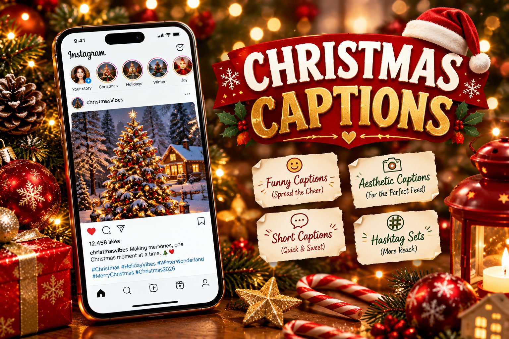

Christmas Instagram Captions 2026: 150+ Captions
Published October 12, 2026 · Updated October 12, 2026 · By EventBuzz Team

The photo is only half the post. On Instagram, the caption is what turns a pretty Christmas picture into saves, shares, and comments — and staring at a blank caption box on December 25th is a universal experience. The good news: you do not need to be a writer. You need the right line for the right photo, and a hashtag set that actually matches your content. This collection of 150+ Christmas Instagram captions for 2026 gives you ready-to-copy lines in every mood: short and punchy, funny, aesthetic, romantic, and family-warm, plus copy-paste hashtag blocks and the caption-writing tricks that make posts perform.
Short Christmas Captions (22 Copy-Ready Lines)
Short captions win on selfies, outfit shots, and tree photos — the image does the talking, the caption adds the wink. Keep it under ten words and let the photo breathe:
- “Merry and bright, that’s the vibe.”
- “All I want for Christmas is this moment.”
- “Sleigh my name, sleigh my name.”
- “Dear Santa, I can explain.”
- “Jolly by nature.”
- “Tis the season to sparkle.”
- “Hot cocoa and cold nights.”
- “Merry everything and happy always.”
- “Candy cane wishes and mistletoe kisses.”
- “Currently: merry.”
- “Under the tree is my favorite place.”
- “Fa la la la fabulous.”
- “Making spirits bright, one photo at a time.”
- “Oh what fun it is to post.”
- “Wrapped up in holiday magic.”
- “Pajamas, cocoa, repeat.”
- “Santa baby, I posted.”
- “Peace, love, and Christmas lights.”
- “Glow mode: holiday edition.”
- “Merry Christmas, ya filthy animal — said with love.”
- “Cozy season is officially here.”
- “December looks good on me.”
Pro tip: short captions pair best with a question in the first comment ("Which tree style is yours — classic or colorful?") to drive engagement without cluttering the caption itself.
Funny Christmas Captions (16 Lines)
Humor is the most-shared caption style at Christmas. Candid photos, pet chaos, wrapping fails, and dessert tables all deserve a funny line:
- “I’m on the nice list. Probably. Don’t check.”
- “Dear Santa, define ‘naughty.’”
- “All I want for Christmas is for someone else to wrap the presents.”
- “My tree is up, my standards are down.”
- “Relationship status: committed to Christmas cookies.”
- “I tried to be good, but the dessert table had other plans.”
- “Santa saw my search history. We need to talk.”
- “Christmas calories don’t count. That’s just science.”
- “I put the ‘elf’ in ‘selfie.’”
- “Warning: may spontaneously burst into carols.”
- “My favorite child gets the biggest present. Don’t tell the others.”
- “I’m dreaming of a white Christmas, but I’ll settle for Wi-Fi.”
- “Elf-tested, Santa-approved.”
- “Single and ready to jingle. Mingle optional.”
- “The tree isn’t the only thing getting lit this Christmas.”
- “Plot twist: I WAS the Secret Santa.”
Funny captions perform best on Reels and carousels where the humor lands across multiple frames — save your best one-liner for the cover slide.
Aesthetic Christmas Captions (16 Lines)
For styled flat-lays, candlelit tables, snowy windows, and moody tree shots, match the visual tone with softer, more poetic language:
- “Golden lights, quiet nights, full heart.”
- “Winter whispers and candlelit dreams.”
- “In the glow of a thousand tiny lights.”
- “December, you beautiful, frosty poem.”
- “Soft snow, warm souls.”
- “The world slows down and sparkles.”
- “Cinnamon air and velvet skies.”
- “Somewhere between the lights and the silence, there is magic.”
- “Collecting moments, not things, this Christmas.”
- “The hush of snowfall, the hum of carols.”
- “Elegance is a tree lit only by fairy lights.”
- “Midnight mass, morning frost, timeless love.”
- “Let the lights blur and the heart focus.”
- “A season painted in gold and evergreen.”
- “Stillness looks a lot like Christmas morning.”
- “Wrapped in wonder, tied with light.”
Aesthetic captions work best in lowercase with minimal emojis — let the words feel as calm as the photo looks. One or two emojis maximum: a candle, a snowflake, a sparkle.
Couple and Family Christmas Captions (12 Lines)
Group photos need warmth, not wit. These lines cover couples, kids, grandparents, and the beautiful chaos of all of them together:
- “Merry Christmas from our little chaos to yours.”
- “All is calm, all is bright — except the kids.”
- “My favorite gift is the one holding my hand.”
- “Matching pajamas, mismatched wrapping skills.”
- “Home is wherever I’m with you — especially at Christmas.”
- “The best present under our tree is each other. Cheesy? Absolutely.”
- “Three generations, one tree, zero leftovers by tomorrow.”
- “She’s the merry to my Christmas.”
- “Built our gingerbread house. Marriage survived. Barely.”
- “Family: where the loudest arguments are about board games.”
- “Kissing under the mistletoe like it’s our first Christmas.”
- “Grateful for this crew, this chaos, this Christmas.”
For family posts, tag the people in the photo rather than naming everyone in the caption — tags drive profile visits, and the caption stays clean.
Copy-Paste Hashtag Sets for Christmas Posts
Hashtags still matter in 2026, but strategy beats volume. Use 8–15 hashtags per post, chosen from ONE block that matches your content — mixing funny tags on an aesthetic post confuses the algorithm about who to show it to. Copy a block, paste it after your caption, and swap two or three tags for niche ones (your city, your niche) for the best reach:
Maximum reach (general Christmas):#christmas #christmas2026 #merrychristmas #christmastime #christmasdecor #christmasvibes #holidayseason #december #christmaslights #santaclaus #christmastree #winter #holidays #christmasmood #festive
Aesthetic / cozy posts:#christmasaesthetic #cozychristmas #winteraesthetic #hygge #christmasmorning #fairylights #cottagecorechristmas #slowchristmas #warmandcozy #christmasmagic #goldenhourchristmas #minimalchristmas
Funny / relatable posts:#christmashumor #funnychristmas #relatablechristmas #christmasmemes #santahumor #holidayhumor #christmaschaos #merrychristmastoall #naughtylist #christmasfun
Family / couple posts:#christmasfamily #familychristmas #christmaswithfamily #couplechristmas #christmascouple #familytime #christmastraditions #homefortheholidays #christmasmemories #togetheratchristmas
Avoid banned or broken tags: check that each hashtag actually loads recent posts before you commit to it, and never copy a 30-tag block from a spam account — Instagram flags repetitive tag spam and quietly limits reach.
Caption-Writing Tips That Get Saves and Shares
- Match the mood, not the trend: a funny caption on a solemn candlelit photo feels off; an aesthetic line on a chaotic family shot feels stiff. Read your photo’s emotion first, then pick the category.
- Front-load the hook: Instagram cuts captions after about 125 characters. Put the punchline or the emotional line first, hashtags and details after.
- Use line breaks: a wall of text gets skipped. One idea per line, with breathing room, gets read — especially for longer heartfelt captions.
- Add a soft call to action: "Tag your Christmas person," "Save this for December 25th," or "Which one are you — 3, 7, or 12?" A gentle prompt triples comments compared to a caption with no ask.
- Personalize one detail: copy-paste lines work, but swapping in one real detail — a name, a city, an inside joke — makes a generic caption feel like yours. "Merry and bright" becomes "Merry and bright from snowy Chicago."
- Keep a caption bank: save your favorites from this list in your phone’s notes app as the season approaches. On Christmas morning, you will post in seconds instead of staring at the screen.
When to Post Your Christmas Content
Timing matters as much as wording. Christmas content peaks in a tight window: start posting styled and countdown content from December 20th, post your main Christmas Day photo on the morning of Friday, December 25, 2026 (morning posts catch both early scrollers and the evening family-scroll wave), and keep one or two "Christmas aftermath" posts — cozy leftovers, new gifts, winter walks — for December 26–28, when engagement stays high but competition drops.
Best posting times during the holiday week: 9–11 AM and 7–9 PM in your audience’s timezone. Avoid posting late on Christmas Eve — everyone is at dinner, not on Instagram. And schedule ahead if you can: writing captions on December 23rd beats writing them between cooking and guests on the 25th.
The best Christmas caption is the one that sounds like you on your happiest day. Borrow the line, then add one true detail — that is what makes strangers stop scrolling.
Frequently Asked Questions
How many hashtags should I use on a Christmas post?
Use 8 to 15 relevant hashtags from one matching category — not 30 random ones. Strategy beats volume: hashtags that match your content tell Instagram exactly who to show the post to.
Should the caption go before or after the hashtags?
Caption first, hashtags after — either at the end of the caption or in the first comment. Never put hashtags in the middle of your sentence; it breaks the reading flow.
What is the best caption for a Christmas tree photo?
Short and confident works best: “Tis the season to sparkle,” “Oh what fun it is to post,” or “Merry and bright, that’s the vibe.” Let the tree be the star.
When should I post my Christmas Day photo?
Post on the morning of Friday, December 25, 2026, ideally between 9 and 11 AM in your audience’s timezone. Morning posts catch early scrollers and ride the evening family-scroll wave.
Can I reuse the same caption as last year?
Yes, but personalize one detail — a name, a city, an inside joke. Your followers will not remember last year’s caption, but the personal touch makes it feel fresh and genuine.
Do funny or aesthetic captions get more engagement?
Funny captions get more shares; aesthetic captions get more saves. Funny wins on Reels and carousels, aesthetic wins on styled single photos. Match the caption to the photo’s mood for the best results.
Conclusion
You now have 150+ Christmas captions, four copy-paste hashtag sets, and the timing plan for the whole holiday week — no more blank caption boxes on December 25th. Pick the line that matches your photo’s mood, add one true personal detail, paste the right hashtag block, and post on the morning of Christmas Day. The photo gets the like; the caption gets the comment, the save, and the share. Merry posting.
More from EventBuzz:
Merry Christmas 2026 — may your captions be as bright as your lights!